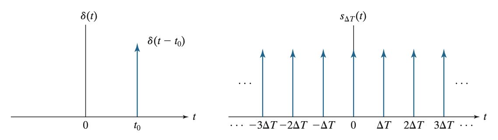
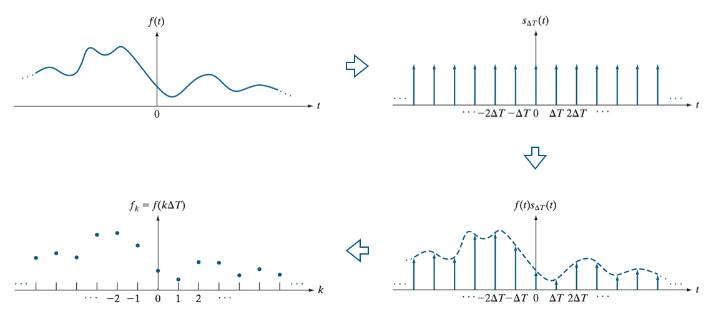
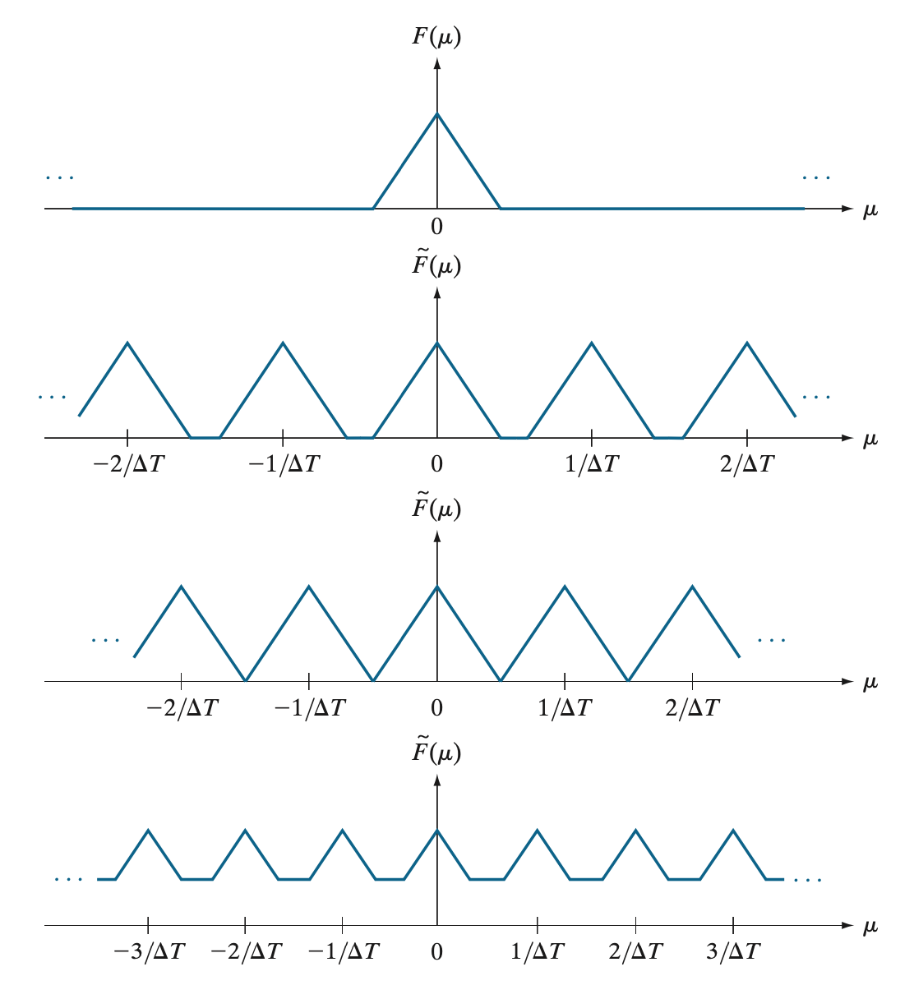
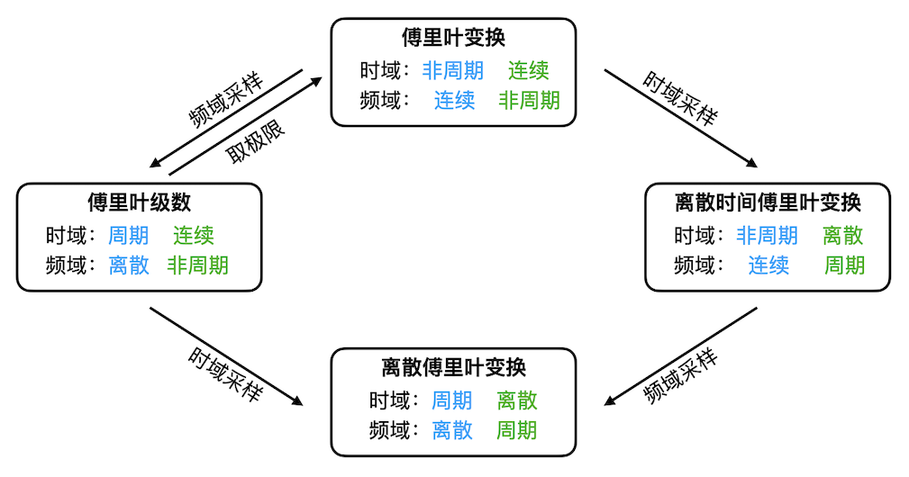

Fourier Transform 2 (DTFT, DFT)
离散时间傅里叶变换 (DTFT)
傅里叶级数和傅里叶变换面向的都是连续函数 \(f(x)\)，但在用计算机处理之前，我们必须将其离散化，因此涉及到了采样操作。
冲激串及其傅里叶变换
上一篇文章 Fourier Transform 1 提到，Dirac \(\delta\) 函数能帮助我们采样一个函数值。进一步地，如果要以 \(h\) 为间隔等距采样一系列函数值，就可以用如下冲激串函数： \[ s(x)=\sum_{n=-\infty}^{\infty}\delta(x-nh)\tag{1-1} \] 下图显示了一个冲激函数与冲激串函数：

下面我们求冲激串的傅里叶变换。注意冲激串是周期函数，不是绝对可积的，因此需要用到上一篇文章最后提到的技巧来计算。首先将 \(s(x)\) 展开为傅里叶级数： \[ s(x)=\sum_{n=-\infty}^{\infty}c_ne^{j2\pi nx/h}\tag{1-2} \] 其中： \[ c_n=\frac{1}{h}\int_{-h/2}^{h/2}s(x)e^{-j2\pi nx/h}\mathrm dx=\frac{1}{h}\int_{-h/2}^{h/2}\sum_{m=-\infty}^{\infty}\delta(x-mh)e^{-j2\pi nx/h}\mathrm dx=\frac{1}{h}e^0=\frac{1}{h}\tag{1-3} \]
于是 \(s(x)\) 的傅里叶级数为： \[ s(x)=\frac{1}{h}\sum_{n=-\infty}^{\infty}e^{j2\pi nx/h}\tag{1-4} \] 根据傅里叶变换的线性性，我们只需要求每一项的傅里叶变换： \[ S(u)=\mathscr F\{s(x)\}=\frac{1}{h}\sum_{n=-\infty}^{\infty}\mathscr F\{e^{j2\pi nx/h}\}\tag{1-5} \] 在上一篇文章中我们计算过 Dirac \(\delta\) 函数的傅里叶变换 \(\mathscr F\{\delta(x-x_0)\}=e^{-jux_0}\)，那么根据傅里叶变换的对偶性，有： \[ \mathscr F\{e^{-jxu_0}\}=\delta(-u-u_0)\xrightarrow{a=-u_0}\mathscr F\{e^{jxa}\}=\delta(-u+a)=\delta(u-a)\tag{1-6} \] 因此： \[ S(u)=\frac{1}{h}\sum_{n=-\infty}^{\infty}\mathscr F\{e^{j2\pi nx/h}\}=\frac{1}{h}\sum_{n=-\infty}^{\infty}\delta\left(u-\frac{2\pi n}{h}\right)\tag{1-7}\label{fourier-s} \]
这就是 \(s(x)\) 的傅里叶变换结果。
采样定理
假设每间隔 \(h\) 对 \(f(x)\) 做一次采样，得到序列 \(\{f_n=f(nh)\}\)，其中 \(n\in\{\ldots,-2,-1,0,1,2,\ldots\}\)，如下图所示：

根据上一节的内容，我们可以用冲激串函数将这个离散的序列写作连续的函数的形式： \[ \{f_n=f(nh)\}\longleftrightarrow\tilde f(x)=f(x)s(x)=\sum_{n=-\infty}^{\infty}f(x)\delta(x-nh)\tag{1-8} \] 换句话说，\(\tilde f(x)\) 就是采样后的函数。于是，一个自然的问题就是：采样操作对函数的傅里叶变换有什么影响呢？也就是说，采样后的函数的傅里叶变换与原函数的傅里叶变换有什么关系呢？
根据卷积定理，由于 \(\tilde f(x)\) 是 \(f(x)\) 与 \(s(x)\) 的乘积，因此其傅里叶变换就是 \(F(u)\) 与 \(S(u)\) 的卷积，其中 \(S(u)\) 已经在上一节中计算出来了，即 \(\eqref{fourier-s}\) 式。于是： \[ \begin{align} \tilde F(u)&=F(u)\ast S(u)\\ &=\int_{-\infty}^{\infty}F(\tau)\frac{1}{h}\sum_{n=-\infty}^{\infty}\delta\left(u-\tau-\frac{2\pi n}{h}\right)\mathrm d\tau\\ &=\frac{1}{h}\sum_{n=-\infty}^{\infty}\int_{-\infty}^{\infty}F(\tau)\delta\left(u-\tau-\frac{2\pi n}{h}\right)\mathrm d\tau\\ &=\frac{1}{h}\sum_{n=-\infty}^{\infty}F\left(u-\frac{2\pi n}{h}\right) \end{align}\tag{1-9}\label{DTFT1} \] 由此可以看出，\(\tilde F(u)\) 是一个以 \(\frac{2\pi}{h}\) 为周期的连续周期函数，它是 \(F(u)\) 的多份平移后的副本的叠加。
特别地，假设 \(f(x)\) 是一个有限带宽的函数，即其傅里叶变换 \(F(u)\) 仅在一个有限范围 \([-u_\max,u_\max]\) 内不为零。那么：
- 如果周期 \(\frac{2\pi}{h}<2u_\max\)，平移后的 \(F(u)\) 之间就会发生重叠，导致相加后在重叠区间内的 \(F(u)\) 丢失了；这被称作欠采样，即采样的间隔 \(h\) 太大。
- 如果周期 \(\frac{2\pi}{h}>2u_\max\)，那么各个平移后的 \(F(u)\) 不仅没有重叠，还隔开了一段距离，这段距离上 \(\tilde F(u)=0\)；这被称作过采样。
- 临界状态就是 \(\frac{2\pi}{h}=2u_\max\)，各个平移后的 \(F(u)\) 刚好不会发生重叠。
下图展示了一个例子，第一行是一个有限带宽函数的傅里叶变换，第二、三、四行分别展示了过采样、临界采样和欠采样后，函数的傅里叶变换：

根据上面的讨论，要想重建出原本的有限带宽函数，采样率需要满足： \[ f_\text{sampling}=\frac{1}{h}>2\cdot\frac{u_\max}{2\pi}=2 f_\max\tag{1-10} \] 其中 \(f_\max\) 表示信号的最大频率，这就是采样定理。
另外，从上面的图可以看出，当 \(\tilde f(x)\) 满足采样定理时，只需要拿出 \(\tilde F(u)\) 的一个周期并放大 \(h\) 倍，就能还原 \(F(u)\)： \[ F(u)=H(u)\tilde F(u),\quad\text{where}\;H(u)=\begin{cases}h&-u_\max\leq u\leq u_\max\\0&\text{otherwise}\end{cases}\tag{1-11}\label{DTFT2} \] 这里 \(H(u)\) 相当于是一个理想低通滤波器。
离散时间傅里叶变换
由于 \(\tilde F(u)\) 是 \(f(x)\) 先采样（即在时域上离散化）、再做傅立叶变换得到的，因此我们称之为离散时间傅里叶变换。在上一节中，我们建立起了 \(\tilde F(u)\) 与 \(F(u)\) 之间的关系，即 \(\eqref{DTFT1}\) 和 \(\eqref{DTFT2}\) 式，发现了 \(\tilde F(u)\) 其实就是 \(F(u)\) 的多份平移副本的叠加，并自然引出了采样定理。这一节中，我们欲显式地写出 \(\tilde F(u)\) 与 \(f_n\) 之间的变换关系。
对 \(\tilde f(x)\) 做傅里叶变换，得： \[ \begin{align} \tilde F(u)&=\int_{-\infty}^{\infty}\tilde f(x)e^{-jux}\mathrm dx=\int_{-\infty}^{\infty}\sum_{n=-\infty}^{\infty}f(x)\delta(x-nh)e^{-jux}\mathrm dx\\ &=\sum_{n=-\infty}^{\infty}\int_{-\infty}^{\infty}f(x)\delta(x-nh)e^{-jux}\mathrm dx=\sum_{n=-\infty}^{\infty}f(nh)e^{-jnhu}=\sum_{n=-\infty}^{\infty}f_ne^{-jnhu} \end{align}\tag{1-12}\label{DTFT} \]
这就是离散时间傅里叶正变换。
值得注意的是，由于 \(\tilde F(u)\) 是周期函数，因此不能做傅立叶逆变换，否则结果发散。注意到，如果将 \(\eqref{DTFT}\) 式改写一下： \[ \tilde F(u)=\sum_{n=-\infty}^{\infty}f_{-n}e^{jnhu}\tag{1-13}\label{DTFT3} \] 对比傅里叶级数表达式： \[ f(x)=\sum_{n=-\infty}^{\infty}c_ne^{jn\omega x},\quad\quad c_n=\frac{1}{2l}\int_{-l}^{l}f(x)e^{-jn\omega x}\mathrm dx\tag{1-14}\label{FS} \] 可以发现二者有着相同的形式，也就是说，\(\eqref{DTFT3}\) 式其实就是函数 \(\tilde F(u)\) 的傅里叶级数展开。于是有： \[ f_{-n}=\frac{h}{2\pi}\int_{-\pi/h}^{\pi/h}\tilde F(u)e^{-jnhu}\mathrm du\tag{1-15} \] 也即： \[ f_n=\frac{h}{2\pi}\int_{-\pi/h}^{\pi/h}\tilde F(u)e^{jnhu}\mathrm du\tag{1-16}\label{IDTFT} \] 这就是离散时间傅里叶逆变换。
小结
在开启下一节之前，我们先对这一节的内容做一个小结。在从傅里叶变换推导到离散时间傅里叶变换的过程中，我们对函数的时域表示进行了采样，发现它的频域表示从非周期函数变成了周期函数。那么，基于傅里叶变换在形式上的对称性，容易想到，如果我们对函数的频域表示进行采样，那么它的时域表示应该也会从非周期函数变成周期函数——这不就是从傅里叶变换推导回了傅里叶级数吗？事实上，对比傅里叶级数 \(\eqref{FS}\) 和离散时间傅立叶变换 \(\eqref{DTFT},\eqref{IDTFT}\)，可以发现二者在形式上是对称的。
值得注意的是，时域和频域在周期性/非周期性和离散性/连续性上有着固定的对应关系——时域上周期（非周期）对应频域上离散（连续）；时域上离散（连续）对应频域上周期（非周期）。对于傅立叶级数、傅立叶变换和离散时间傅立叶变换，分别有：
- 傅立叶级数：时域周期连续、频域离散非周期
- 傅立叶变换：时域非周期连续、频域连续非周期
- 离散时间傅立叶变换：时域非周期离散、频域连续周期
于是，剩下的最后一种组合就呼之欲出了，即时域和频域上均是离散周期函数，这就是离散傅立叶变换。进一步地，我们还能立刻想到两种推导离散傅立叶变换的路径——对离散时间傅立叶变换的频域表示采样、或对傅立叶级数的时域表示采样，如下图所示：

离散傅立叶变换 (DFT)
尽管离散时间傅立叶变换在时域上做了离散化，但是在频域上是连续的，计算机依旧无法处理。同理，傅立叶级数频域是离散的，但时域是连续的，也无法处理。因此，我们希望构建时域、频域均为离散序列之间的变换关系，即离散傅立叶变换。
从离散时间傅立叶变换推导
考虑一个长为 \(M\) 的序列 \(\{f_0,f_1,\ldots,f_{M-1}\}\)，可以等价地将其视作在 \(n>M-1\) 和 \(n<0\) 时取值为零的无限长序列： \[ f_n=\begin{cases}f_n,&0\leq n<M\\0,&\text{otherwise}\end{cases}\tag{2-1} \] 对其进行离散时间傅立叶变换得： \[ F(u)=\sum_{n=-\infty}^{\infty}f_ne^{-jnhu}=\sum_{n=0}^{M-1}f_ne^{-jnhu}\tag{2-2} \] 由前文可知这是一个连续的、以 \(\frac{2\pi}{h}\) 为周期的函数。考虑在每个周期等间隔采样 \(M\) 个点，即间隔为 \(h'=\frac{2\pi}{hM}\)，得到序列 \(\{F_m=F(mh')\}\)，那么代入上式得： \[ F_m=F(mh')=\sum_{n=0}^{M-1}f_ne^{-jmnhh'}=\sum_{n=0}^{M-1}f_ne^{-j2\pi mn/M}\tag{2-3} \] 这就是离散傅立叶正变换。
倘若将序列 \(\{F_m=F(mh')\}\) 写作连续函数形式： \[ \{F_m=F(mh')\}\longleftrightarrow \tilde F(u)=F(u)s(u)=\sum_{m=-\infty}^{\infty}F(u)\delta(u-mh') \] 那么代入离散时间傅立叶逆变换 \(\eqref{IDTFT}\) 式： \[ \begin{align} f_n&=\frac{h}{2\pi}\int_{-\pi/h}^{\pi/h}\tilde F(u)e^{jnhu}\mathrm du\\ &=\frac{h}{2\pi}\int_{-\pi/h}^{\pi/h}\sum_{m=-\infty}^{\infty}F(u)\delta(u-mh')e^{jnhu}\mathrm du\\ &=\frac{h}{2\pi}\sum_{m=-\infty}^{\infty}\int_{-\pi/h}^{\pi/h}F(u)\delta(u-mh')e^{jnhu}\mathrm du\\ &=\frac{h}{2\pi}\sum_{-\frac{\pi}{hh'}\leq m\leq\frac{\pi}{hh'}}F(mh')e^{jmnhh'}\\ &=\frac{1}{M}\sum_{-\frac{M}{2}\leq m\leq\frac{M}{2}}F_me^{j2\pi mn/M}\\ &=\frac{1}{M}\sum_{m=0}^{M-1}F_me^{j2\pi mn/M}\\ \end{align}\tag{2-4} \] 这就是离散傅立叶逆变换。
为了与后文的符号统一，我们用 \(F(u)\) 和 \(f(x)\) 来代替 \(F_m\) 和 \(f_n\)，就得到了离散傅里叶变换对： \[ \begin{align} &F(u)=\sum_{x=0}^{M-1}f(x)e^{-j2\pi ux/M},\quad u=0,\ldots,M-1\tag{2-5}\label{DFT}\\ &f(x)=\frac{1}{M}\sum_{u=0}^{M-1}F(u)e^{j2\pi ux/M},\quad x=0,\ldots,M-1\tag{2-6}\label{IDFT} \end{align} \]
离散傅里叶变换的性质
记 \(\mathscr F\{f(x)\}=F(u),\,\mathscr F\{g(x)\}=G(u)\).
线性性
\[ \begin{align} &\mathscr F\{af(x)+bg(x)\}=a\mathscr F\{f(x)\}+b\mathscr F\{g(x)\}=F(u)+G(u)\\ &\mathscr F^{-1}\{aF(u)+bG(u)\}=a\mathscr F^{-1}\{F(u)\}+b\mathscr F^{-1}\{G(u)\} \end{align} \]
平移性质
\[ \begin{align} &\mathscr F\{f(x-x_0)\}=e^{-j2\pi ux_0/M}F(u)\\ &\mathscr F^{-1}\{F(u-u_0)\}=e^{j2\pi u_0x/M}f(x) \end{align} \] 特别地，当 \(x_0=u_0=M/2\) 时，有： \[ \begin{align} &\mathscr F\{f(x-M/2)\}=(-1)^uF(u)\\ &\mathscr F^{-1}(F(u-M/2))=(-1)^xf(x) \end{align} \]
周期性
\[ \begin{align} &F(u)=F(u+kM)&&k\in\mathbb Z\\ &f(x)=f(x+kM)&&k\in\mathbb Z \end{align} \]
共轭对称性
若 \(f(x)\) 是实函数，则 \(F(u)=\mathscr F\{f(x)\}\) 是共轭对称的（实部偶函数，虚部奇函数），即： \[ F^\ast(u)=F(-u) \] 若 \(f(x)\) 是虚函数，则 \(F(u)=\mathscr F\{f(x)\}\) 是共轭反对称的（实部奇函数，虚部偶函数），即： \[ F^\ast(u)=-F(-u) \]
循环卷积定理
\[ \begin{align} &\mathscr F\{f(x)\ast g(x)\}=F(u)G(u)\\ &\mathscr F\{f(x)g(x)\}=\frac{1}{M}F(u)\ast G(u) \end{align} \] 值得注意的是，由于离散傅里叶变换具有周期性，因此这里的卷积是循环卷积，即先将 \(f(x)\) 与 \(g(x)\) 进行周期延拓后再做卷积。在下一篇文章中我们将看到，在图像处理中这种卷积模式并不是我们想要的，因此需要做一些额外的操作。
参考资料
- Rafael C. Gonzalez. Digital Image Processing, Fourth Edition. ↩︎
- Wikipedia. Discrete-time Fourier transform. https://en.wikipedia.org/wiki/Discrete-time_Fourier_transform ↩︎
- 彻底搞懂傅里叶变换之实用干货分享(四)-离散傅里叶变换(DFT) - anders的文章 - 知乎 https://zhuanlan.zhihu.com/p/405143684 ↩︎
- Half_Kettle. 从傅里叶级数（Fourier series）到离散傅里叶变换（Discrete Fourier transform）. https://www.cnblogs.com/yang-ding/p/15925430.html ↩︎
- 《数字图像处理》图像表征：离散傅里叶变换（DFT）、离散余弦变换（DCT）、主成分分析（PCA） - zhiwei的文章 - 知乎 https://zhuanlan.zhihu.com/p/563668048 ↩︎